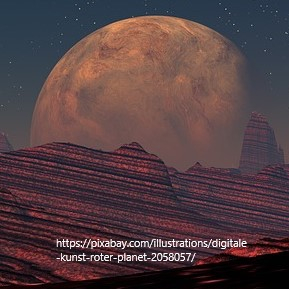
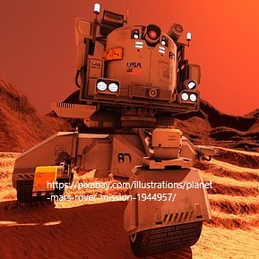

<
>

The plan of Mars outpost started from 2025. In that year, a team in university of France successfully create a very strong protecting cover. By using this
cover, scientists build a artificial ecynomic system and keep it running for ten years. After their result was known by UN, the leader decided to build a outpost
on Mars and called this plan as 'new hometown'. As most things, beginning is the most difficult, the first step is to build this cover and this last for 15 years.
The lucky thing is that in 2063, all the foundation building were completed. UN hire many volunteers to go to Mars to live for some time and then proof living
under cover cannot result in serious health problems.The plan come to second step
In the first decade, all most all food come from Earth and UN have received many reports saying that they want to eat fresh vegegable and fruit rathe than can food.
After discussion, UN decided to farm on Mars and hire many argiculture scientists in order to change the soil on Mars to make it suitable for vegetation.
Finally, we decided to bring soil from earth to replace the soil on surface and it worked. So, we now are hiring more people to join us. On Mars you can get
more salary than earth and have a totally different experience. Let us create new history.
